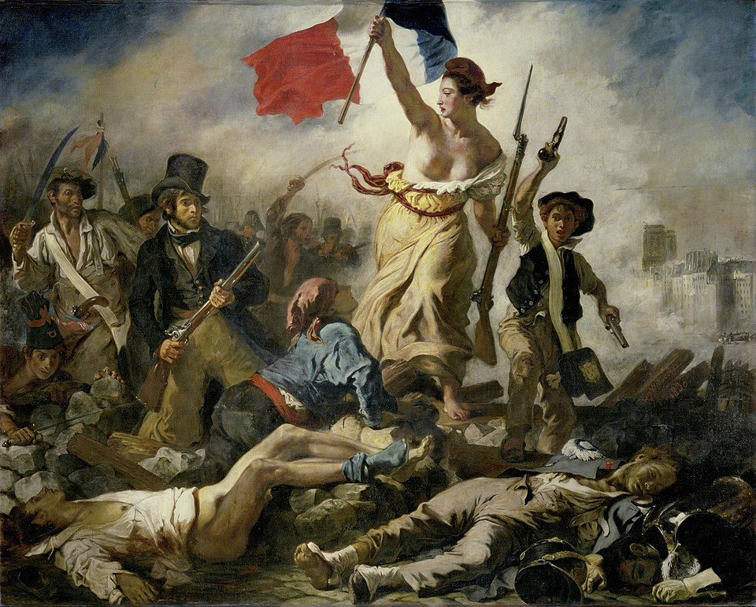
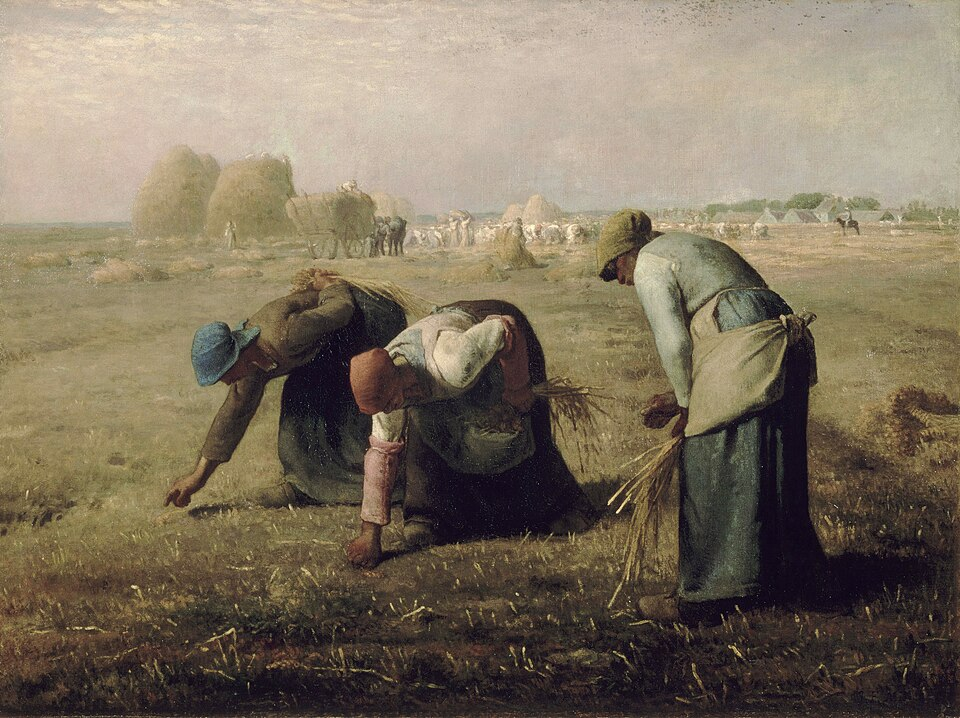
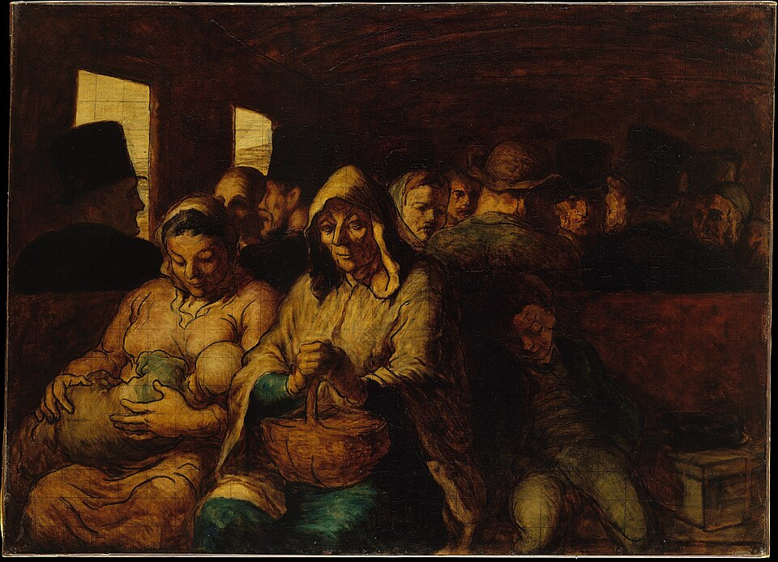
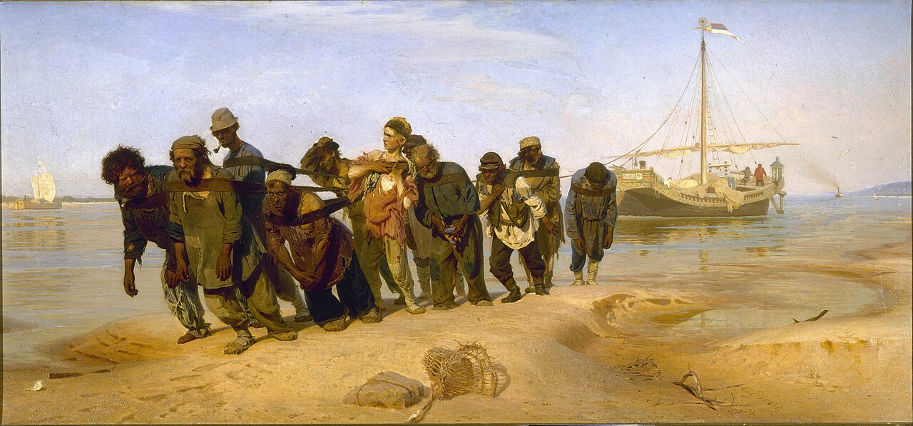

낭만주의
19세기 프랑스 사실주의는 단순히 “사진처럼 똑같이 그리는 기법”이 아니다. 더 근본적인 변화는 무엇을 큰 그림의 주제로 삼을 가치가 있는가에 있었다. 역사화가 고대 영웅을, 낭만주의가 혁명과 재난·숭고한 감정을 그렸다면, 사실주의 화가들은 농민, 노동자, 지방의 장례식, 기차의 3등석 승객처럼 동시대의 평범한 현실을 미화하거나 영웅화하지 않고 주요 회화의 중심으로 끌어올렸다.
낭만주의가 현실의 사건을 다루더라도 그것을 극적이고 영웅적이며 감정적으로 확대했다면, 사실주의는 한 단계 더 나아가 특별하지 않은 현실 자체도 미술의 주제가 될 수 있다고 주장했다.
농민·노동자·시민·승객처럼 역사화에서 주변부에 있던 사람이 화면의 중심이 된다.
고대나 중세보다 화가 자신이 살아가는 동시대의 사건과 생활을 직접 다룬다.
과장된 영웅주의와 이국적 환상보다 눈앞의 삶을 구체적으로 관찰한다.
산업화·도시화 속에서 농민과 도시 노동자의 삶이 새로운 시각적 주제가 된다.
대형 캔버스와 장엄한 형식을 평범한 일상에 사용하여 아카데미의 장르 위계를 흔든다.

철도망과 산업 생산이 확대되고 농촌과 도시의 생활방식이 빠르게 변한다.
다게레오타이프가 파리에서 공개되며 현실의 외관을 기계적으로 기록할 수 있는 새로운 매체가 등장한다.
루이필리프 왕정이 무너지고 제2공화국이 수립된다. 민주주의와 계급 문제가 사회의 전면에 등장한다.
파리 노동계층의 봉기가 군대에 의해 진압되며 사회적 계급 갈등이 극적으로 드러난다.
《오르낭의 매장》 등에서 평범한 지방 사람들을 거대한 역사화 규모로 그린다.
쿠르베가 만국박람회 공식 체계 밖에 독립 전시 공간인 ‘사실주의관’을 세운다.

사실주의를 하나의 화풍으로만 보면 쿠르베·밀레·도미에의 차이가 사라진다. 작품을 이해하기 위해서는 다음 세 방향으로 나누어 보는 것이 유용하다.
평범한 지방 생활과 보통 사람을 역사화의 거대한 형식으로 끌어올려 아카데미가 정한 “고귀한 주제”의 위계를 공격한다.
밭에서 이삭을 줍고 씨를 뿌리는 농민의 반복적인 노동과 삶의 무게를 존엄하게 그린다.
신문 풍자화와 회화를 통해 정치인·부르주아·도시의 빈민·기차 승객 등 근대 도시사회의 계급과 일상을 관찰한다.


| 관찰 항목 | 낭만주의 | 사실주의 |
|---|---|---|
| 주제 | 혁명·재난·이국·역사·숭고한 자연 | 농민·노동·장례식·도시·일상 |
| 주인공 | 영웅·반항자·고독한 개인 | 이름 없는 보통 사람 |
| 감정 | 격정과 극적 경험 | 절제된 관찰과 삶의 물질성 |
| 현실 처리 | 현실을 극적·상징적으로 확대 | 동시대 현실을 특별한 미화 없이 제시 |
| 시간 | 현재뿐 아니라 중세·이국·역사에 관심 | 자신이 살아가는 현재를 중시 |
| 사회계층 | 영웅적 개인과 혁명적 군중 | 농민·노동자·소시민과 일상의 군중 |
| 회화의 위계 | 역사화의 극적 전통을 여전히 활용 | 일상적 소재를 대형 회화의 수준으로 끌어올림 |
| 한 문장 | “현실을 강렬하게 느껴라.” | “지금 존재하는 현실을 보라.” |
| 질문 | 들라크루아 《민중을 이끄는 자유의 여신》 | 쿠르베 《오르낭의 매장》 |
|---|---|---|
| 사건 | 혁명이라는 역사적 대사건 | 지방 마을의 평범한 장례 |
| 주인공 | 자유를 의인화한 영웅적 여성 | 명확한 영웅이 없음 |
| 구도 | 전진하는 피라미드와 대각선 | 수평으로 길게 늘어선 집단 |
| 감정 | 흥분·투쟁·열정 | 무겁고 일상적인 장례의 분위기 |
| 의미 | 현실을 상징적·영웅적 사건으로 상승 | 평범한 현실 자체의 중요성을 주장 |
| 관람자에게 | “이 사건에 참여하라.” | “이 사람들을 있는 그대로 보라.” |
사실주의는 후대 인상주의와 동일한 운동은 아니지만, 고대·신화보다 현대의 일상을 그려도 된다는 자유와 아카데미의 전통적 장르 위계에 대한 도전을 다음 세대에 넘겨주었다.
| 사실주의 | → | 인상주의 |
|---|---|---|
| 동시대 현실 | → | 현대 도시·카페·극장·거리·여가 |
| 평범한 사람 | → | 부르주아·노동자·무용수·행인 등 현대인 |
| 아카데미의 주제 위계 거부 | → | 공식 살롱 밖 독립 전시 |
| 현실의 사회적 조건 | → | 현실이 빛과 시각 속에서 순간적으로 어떻게 보이는지 |
사실주의의 공통 핵심은 고대·신화·영웅 대신 자신이 살아가는 동시대의 현실과 평범한 사람을 중요하게 본다는 것이다. 그러나 각국이 직면한 사회문제가 달랐기 때문에 주제도 달라졌다.
| 국가·지역·세부 사조 | 지역적 특징 | 대표 화가·제작자 |
|---|---|---|
| 프랑스 — 프랑스 사실주의 |
| 귀스타브 쿠르베 |
| 러시아 — 러시아 사실주의 |
| 일리야 레핀 |
사실주의는 사진처럼 정확히 그리는 기술명이 아니라, 그릴 가치가 없다고 여겨지던 동시대 현실을 회화의 중심으로 올린 태도다. 농민, 노동자, 도시 빈민, 지방 장례, 산업 현장, 제도적 불평등이 역사화의 크기와 진지함을 획득하면서 회화의 주제 위계가 흔들렸다.
앞부분에서 이미 쿠르베, 밀레, 도미에를 보여주었으므로 여기서는 표의 러시아, 독일, 미국 화가들을 중심으로 반복 없는 대표작 카드를 구성했다.
선정 이유 쿠르베는 평범한 지방 장례를 역사화의 크기로 제시해 프랑스 사실주의의 주제 혁명을 분명히 했다.
영웅도 이상적 신체도 없이 실제 마을 사람들이 화면을 가득 채운다. 일상의 공동체와 불편한 현실을 거대한 형식으로 마주하게 함으로써 무엇이 중요한 회화 주제가 될 수 있는지를 바꾸었다.

선정 이유 레핀은 개인별 초상성과 사회 비판을 결합해 러시아 사실주의가 프랑스와 다른 공공적 서사를 만든 방식을 보여 준다.
한 줄로 묶인 노동자들은 익명의 군중이 아니라 서로 다른 나이와 표정을 가진 개인으로 보인다. 넓은 강과 밝은 하늘 아래의 고된 노동은 제국의 진보와 현실 사이의 모순을 드러낸다.